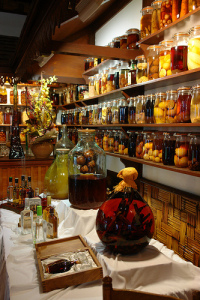

Bocaux de rhums arrangés au restaurant de l'ancienne léproserie de la Montagne, Ile de la Reunion - photo de History
La Réunion a aujourd'hui rattrapé son retard qualitatif, avec nottamment le rhum Charette, mais la tradition est bien enracinée et veut que le rhum de la Réunion soit arrangé. Les réunionnais offrent volontier un verre de rhum arrangé pour faire découvrir les délices de leur pays. C'est aussi un moyen de découvrir les fruits et les plantes de cette île et aussi de découvrir le savoir faire de son hôte.
Le goût et la saveur du rhum arrangé s'obtiennent par une macération longue des ingrédients. Les épices, feuilles, écorces, friandises ou fruits peuvent être l'unique ingrédient (avec le rhum) ou peuvent être combinés selon les recettes. Il existe des recettes classiques que l'on retrouve dans les guides et au dos de certaines bouteilles, mais chaque Réunionnais prépare son rhum selon sa culture, sa région, ses habitudes, la saison ou son inspiration. Certains rajoutent du sirop de sucre de canne pour le radoucir.
A la Réunion, on trouve dans le commerce des assortiments de plantes et d'écorces séchées vendues en sachets spécialement pour la préparation de rhum arrangés. Il est aussi possible de trouver directement des bouteilles de rhum arrangé. Ce sont généralement des productions artisanales que l'on retrouve sur les marchés comme le marché de Saint-Pierre.
Quelques recettes classiques de rhum arrangé sur Marmiton.